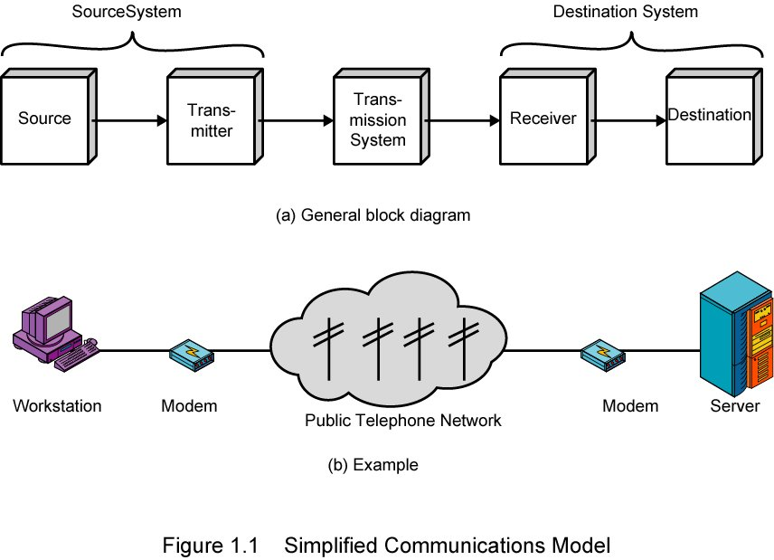
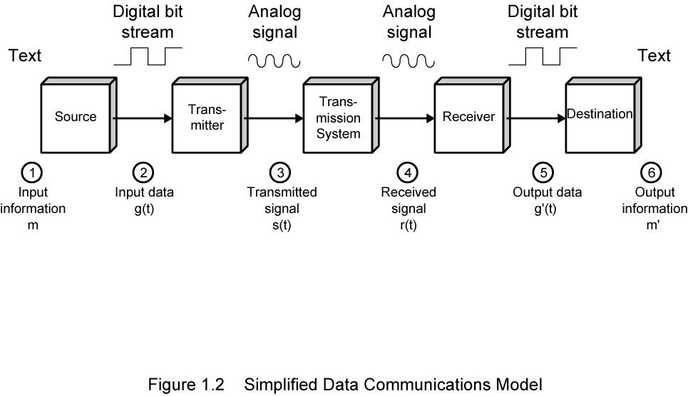
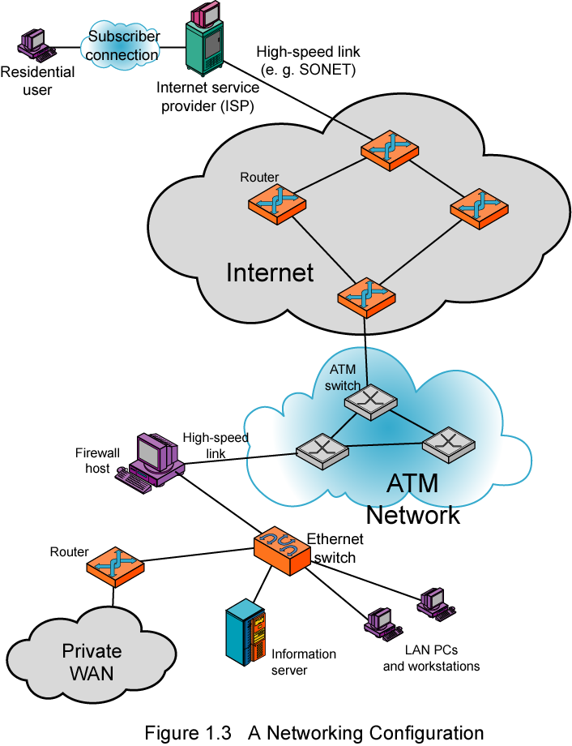

class: center, middle # **PAR - Unidad 1** # **Introducción a los Sistemas de Comunicaciones** --- # Representación de la Información * **[Información](https://es.khanacademy.org/computing/computer-science/informationtheory):** - es el resultado de procesar datos de manera que aporte conocimiento al receptor - mide la incertidumbre de todos los posibles eventos o estados de un sistema: la **[Entropía](https://es.wikipedia.org/wiki/Entrop%C3%ADa_%28informaci%C3%B3n%29)** - a **menor probabilidad** de un suceso, **mayor información** [I(x) = log<sub>2</sub>(1/P(x))] - [la paradoja de la información y la teoría de Shannon](https://www.youtube.com/watch?v=4ic-J79O9hg) * **Datos**: son números, caracteres, imágenes u otros productos de la conversión de fenómenos físicos en símbolos * **Mensaje**: secuencia de símbolos * **Transmisión**: envío de un mensaje haciendo uso de algún fenómeno físico (señal) * **Señal**: magnitud física variable en el tiempo * **Señalización**: propagación de una señal a través de un medio físico --- # Símbolos, Bits y Códigos * **Símbolo** - cada uno de los estados en los que puede encontrarse una fuente de transmisión o cada uno de las distintas unidades elementales que puede transmitir un emisor los símbolos son el soporte de la información p. e., una fuente que puede transmitir cualquiera de las letras del alfabeto, ¿cuántos estados/símbolos puede tener? * **Bit (b)** - es cada uno de los símbolos de una fuente binaria (BInary digiT) y, por tanto, - es la unidad mínima de información, pudiendo tomar los valores 0 ó 1 (F o V) - mide la cantidad de información de un sistema de N símbolos: log<sub>2</sub>N bits (Truco: log<sub>2</sub>n = log<sub>10</sub>n/log<sub>10</sub>2 [log<sub>10</sub>2 ~= 0,3]) - **Byte (B)** - mínima secuencia contigua de bits almacenable en un sistema (habitualmente 8 bits) * **Código** - regla para representar un conjunto de símbolos, p.e.: enteros, caracteres, ... en el código ASCII --- # El Sistema Binario * **Sistema de Numeración Posicional** - <strong>N = a<sub>n-1</sub> B<sup>n-1</sup> + ... + a<sub>1 </sub>B<sup>1</sup> + a<sub>0 </sub>B<sup>0</sup></strong> - decimal: B = 10 (0-9) * **Sistemas de numeración usados en Informática** - binario: B = 2 (0-1) - octal: B = 8 (0-7) ==> 1 dígito oct. == 3 bits - hexadecimal: B = 16 (0-9, A-F) ==> 1 dígito hex. == 4 bits * **[Unidades de medidas (prefijos binarios)](https://es.wikipedia.org/wiki/Prefijo_binario)** - almacenamiento: *Byte (B)* (a veces en bits (b)) - multiplicadores son potencias de 2: Kilo/Kibi (2<sup>10</sup> == 1024) - otros multiplicadores (x2<sup>10</sup>): Mega/Mebi, Giga/Gibi, Tera/Tibi, ... - tasa de datos: **bits/s** (**b/s** o **bps**) - multiplicadores son potencias de 10: Kilo (10<sup>3</sup> == 1000) - otros multiplicadores (x Kilo): Mega, Giga, Tera, Peta, Exa, Zetta, ... --- # Operaciones lógicas con Bits * **NO - NOT (!)** - !0 == 1; !1 == 0 * **Y - AND (&)** - 1 & 1 == 1; en el resto de los casos es 0 * **O - OR (|)** - 0 | 0 == 0; en el resto de los casos es 1 * **O..O - XOR (^)** - 0^1/1^0 == 1; 0^0/1^1 == 0 --- # Compresión * ** Convierte una determinada sucesión de bits (o símbolos) en otra más corta ** - de esta manera se consigue transmisiones y almacenamientos más eficientes, manteniendo la mayor cantidad de información posible * **Sin pérdida de información o reversible:** - sólo se consigue si el código original es ineficiente, es decir, es redundante (Objetiva) - se podría incluir aquí la compresión con pérdida, que no es percibida por el receptor (Subjetiva) * **Con pérdida de información o irreversible** - no se puede reconstruir el símbolo original, pero sí con una aceptable aproximación --- # Modelo de Comunicaciones * **Fuente** - genera los datos a transmitir * **Transmisor** - convierte los datos en señales transmisibles * **Sistema de trasmisión** - transporta los datos/señales * **Receptor** - convierte las señales recibidas en datos * **Destino** - toma los datos que le llegan --- # Modelo Simplificado - Diagrama  --- # Modelo Simplificado - Proceso  --- # Redes de Área Amplia - WANs * Cubren una extensa área geográfica a través de muchas y complejas interconexiones entre redes muy heterogéneas ==> compartir recursos: conmutar o multiplexar. * Pueden ser privadas o construidas por ISPs para ofrecer conexión desde LANs a Internet. * **Alternativas** tecnológicas: - punto a punto (línea dedicada) - conmutación de circuitos / paquetes - circuitos virtuales * Hoy en día, Internet es la WAN por excelencia. * Siendo muy variada las tecnologías para establecer el enlace entre LANs y WANs: xDSL, cablemódem, ... --- # Conmutación de Circuitos * Redes *orientadas a la conexión* * Circuito de comunicación dedicado que se establece durante la duración completa de la conversación * Antes de enviar ningún dato, el origen debe establecer una conexión con el destino a través de la red (retardo) * Se envían mensajes de señalización entre centralitas para establecer los circuitos * La tasa de bit asociada a la conexión está prefijada y es constante * **Modelo: la red telefónica** --- # Conmutación de Paquetes * Redes **no orientadas a la conexión** * Envío de datos sin necesidad de establecer previamente un camino determinado. * Los mensajes se dividen en paquetes más pequeños, cada uno con dirección de origen y destino y sin garantía de que llegue (= cartas) * La red está compuesta por encaminadores (routers) que deciden el camino a seguir por cada paquete (retardo), pudiendo estos no llegar, llegar fuera de orden o llegar duplicados. * Se puede mezclar con técnicas orientadas a la conexión mediante circuitos virtuales. * **Modelo: el sistema postal**. Y es le fundamento de Internet --- # Circuitos Virtuales * Los **circuitos virtuales** combinan: - la conmutación de paquetes, transmitiendo los datos en paquetes, - con la conmutación de circuitos, estableciendo un único camino para todos los paquetes * Esto consigue **reducir la redundancia** en los paquetes (p.e. no necesita las direcciones) y que estos lleguen ordenados * Hay dos técnicas principales: - **Frame Relay**: antigua, tramas de tamaño variable - **ATM**: paquetes de tamaño fijo (celdas) --- # Redes de Área Local - LANs * Cubre una pequeña área física sala, edificio o campus pequeño * Usualmente pertenece a la misma organización que los dispositivos conectados al red * Tasas de datos muy altas * Es factible difundir mensajes a toda la red * Alternativas tecnológicas: - conexión alámbrica: Ethernet/IEEE 802.3 - conexión inalámbrica: Wifi/IEEE 802.11 * También se habla de las **redes de área personal** (**PAN**s) con alcances de hasta unos 10 metros usando tecnologías como bluetooth, IR, usb, ... --- # Redes de Área Metropolitana * Las MANs suelen ser redes de alta velocidad y área de término medio entre una LAN y una WAN * Red privada o pública que proporciona la conexión de muchas LANs entre sí y/o a una WAN (como Internet) * Implementación: - alámbrica: fibra óptica y cable coaxial - inalámbrica: ondas de radio, microondas, láser --- # Ejemplo  --- # [Asociaciones de estándares](https://planificacionadministracionredes.readthedocs.io/es/latest/Tema02/Teoria.html) * **Estándar**: es una norma establecida o requisito. * Usualmente es un documento formal que establece criterios, métodos, procesos y prácticas uniformes de ingeniería o técnicos. * Normalización o Estandarización: - estándar obligatorio/voluntario - estándar de iure/de facto * Asociación de estándares: entidad cuya actividad primaria es desarrollar, coordinar, promulgar, revisar, interpretar y mantener estándares que dirigen los intereses de una amplia base de usuarios externos a ellas.